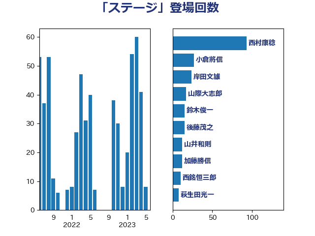

単語「ステージ」

| 西村康稔 | 自由民主党 | 93 回 |
| 小倉將信 | 自由民主党 | 27 回 |
| 岸田文雄 | 自由民主党 | 24 回 |
| 山際大志郎 | 自由民主党 | 17 回 |
| 鈴木俊一 | 自由民主党 | 15 回 |
| 後藤茂之 | 自由民主党 | 15 回 |
| 山井和則 | 立憲民主党 | 12 回 |
| 加藤勝信 | 自由民主党 | 12 回 |
| 西銘恒三郎 | 自由民主党 | 10 回 |
| 萩生田光一 | 自由民主党 | 8 回 |
| 竹内真二 | 公明党 | 8 回 |
| 和田義明 | 自由民主党 | 8 回 |
| 阿部司 | 日本維新の会 | 7 回 |
| 柚木道義 | 立憲民主党 | 7 回 |
| 野田聖子 | 自由民主党 | 6 回 |
| 渡辺博道 | 自由民主党 | 6 回 |
| 中野洋昌 | 公明党 | 6 回 |
| 若松謙維 | 公明党 | 5 回 |
| 横沢高徳 | 立憲民主党 | 5 回 |
| 西野太亮 | 自由民主党 | 4 回 |
| 若林健太 | 自由民主党 | 4 回 |
| 空本誠喜 | 日本維新の会 | 4 回 |
| 牧島かれん | 自由民主党 | 4 回 |
| 浅野哲 | 国民民主党 | 4 回 |
| 齋藤健 | 自由民主党 | 3 回 |
| 高木陽介 | 公明党 | 3 回 |
| 音喜多駿 | 日本維新の会 | 3 回 |
| 長妻昭 | 立憲民主党 | 3 回 |
| 西村明宏 | 自由民主党 | 3 回 |
| 田嶋要 | 立憲民主党 | 3 回 |
| 永岡桂子 | 自由民主党 | 3 回 |
| 武部新 | 自由民主党 | 3 回 |
| 森本真治 | 立憲民主党 | 3 回 |
| 梅村聡 | 日本維新の会 | 3 回 |
| 斉藤鉄夫 | 公明党 | 3 回 |
| 岩渕友 | 日本共産党 | 3 回 |
| 山口那津男 | 公明党 | 3 回 |
| 小川淳也 | 立憲民主党 | 3 回 |
| 宗清皇一 | 自由民主党 | 3 回 |
| 勝目康 | 自由民主党 | 3 回 |
| 仁木博文 | 無所属 | 3 回 |
| 鰐淵洋子 | 公明党 | 2 回 |
| 鈴木義弘 | 国民民主党 | 2 回 |
| 紙智子 | 日本共産党 | 2 回 |
| 稲富修二 | 立憲民主党 | 2 回 |
| 秋葉賢也 | 自由民主党 | 2 回 |
| 福島みずほ | 社会民主党 | 2 回 |
| 礒崎哲史 | 国民民主党 | 2 回 |
| 石井啓一 | 公明党 | 2 回 |
| 渡辺創 | 立憲民主党 | 2 回 |
| 池下卓 | 日本維新の会 | 2 回 |
| 柴愼一 | 立憲民主党 | 2 回 |
| 松野博一 | 自由民主党 | 2 回 |
| 村田享子 | 立憲民主党 | 2 回 |
| 早稲田ゆき | 立憲民主党 | 2 回 |
| 新妻秀規 | 公明党 | 2 回 |
| 庄子賢一 | 公明党 | 2 回 |
| 川田龍平 | 立憲民主党 | 2 回 |
| 山田勝彦 | 立憲民主党 | 2 回 |
| 山本啓介 | 自由民主党 | 2 回 |
| 山口壯 | 自由民主党 | 2 回 |
| 佐藤英道 | 公明党 | 2 回 |
| 中条きよし | 日本維新の会 | 2 回 |
| 高階恵美子 | 自由民主党 | 1 回 |
| 高橋千鶴子 | 日本共産党 | 1 回 |
| 馬場雄基 | 立憲民主党 | 1 回 |
| 青島健太 | 日本維新の会 | 1 回 |
| 長友慎治 | 国民民主党 | 1 回 |
| 鈴木宗男 | 日本維新の会 | 1 回 |
| 金村龍那 | 日本維新の会 | 1 回 |
| 進藤金日子 | 自由民主党 | 1 回 |
| 赤嶺政賢 | 日本共産党 | 1 回 |
| 藤井一博 | 自由民主党 | 1 回 |
| 菊田真紀子 | 立憲民主党 | 1 回 |
| 茂木敏充 | 自由民主党 | 1 回 |
| 羽生田俊 | 自由民主党 | 1 回 |
| 竹谷とし子 | 公明党 | 1 回 |
| 窪田哲也 | 公明党 | 1 回 |
| 稲津久 | 公明党 | 1 回 |
| 矢倉克夫 | 公明党 | 1 回 |
| 田村憲久 | 自由民主党 | 1 回 |
| 田中健 | 国民民主党 | 1 回 |
| 生稲晃子 | 自由民主党 | 1 回 |
| 甘利明 | 自由民主党 | 1 回 |
| 浜地雅一 | 公明党 | 1 回 |
| 沢田良 | 日本維新の会 | 1 回 |
| 水岡俊一 | 立憲民主党 | 1 回 |
| 櫛渕万里 | れいわ新選組 | 1 回 |
| 森田俊和 | 立憲民主党 | 1 回 |
| 梅村みずほ | 日本維新の会 | 1 回 |
| 柴山昌彦 | 自由民主党 | 1 回 |
| 松村祥史 | 自由民主党 | 1 回 |
| 松川るい | 自由民主党 | 1 回 |
| 新藤義孝 | 自由民主党 | 1 回 |
| 斎藤アレックス | 国民民主党 | 1 回 |
| 平木大作 | 公明党 | 1 回 |
| 岬麻紀 | 日本維新の会 | 1 回 |
| 岩本剛人 | 自由民主党 | 1 回 |
| 山添拓 | 日本共産党 | 1 回 |
| 山本佐知子 | 自由民主党 | 1 回 |
| 山崎誠 | 立憲民主党 | 1 回 |
| 山崎正恭 | 公明党 | 1 回 |
| 山下雄平 | 自由民主党 | 1 回 |
| 小林鷹之 | 自由民主党 | 1 回 |
| 小島敏文 | 自由民主党 | 1 回 |
| 小寺裕雄 | 自由民主党 | 1 回 |
| 寺田学 | 立憲民主党 | 1 回 |
| 宮本徹 | 日本共産党 | 1 回 |
| 宮本岳志 | 日本共産党 | 1 回 |
| 宮崎雅夫 | 自由民主党 | 1 回 |
| 宮崎勝 | 公明党 | 1 回 |
| 守島正 | 日本維新の会 | 1 回 |
| 大岡敏孝 | 自由民主党 | 1 回 |
| 塩川鉄也 | 日本共産党 | 1 回 |
| 堀場幸子 | 日本維新の会 | 1 回 |
| 国定勇人 | 自由民主党 | 1 回 |
| 吉良よし子 | 日本共産党 | 1 回 |
| 吉田豊史 | 無所属 | 1 回 |
| 吉田久美子 | 公明党 | 1 回 |
| 吉川沙織 | 立憲民主党 | 1 回 |
| 古賀之士 | 立憲民主党 | 1 回 |
| 務台俊介 | 自由民主党 | 1 回 |
| 冨樫博之 | 自由民主党 | 1 回 |
| 佐藤正久 | 自由民主党 | 1 回 |
| 伊藤孝恵 | 国民民主党 | 1 回 |
| 伊藤俊輔 | 立憲民主党 | 1 回 |
| 伊波洋一 | 無所属 | 1 回 |
| 伊佐進一 | 公明党 | 1 回 |
| 中川宏昌 | 公明党 | 1 回 |
| 世耕弘成 | 自由民主党 | 1 回 |
| 下野六太 | 公明党 | 1 回 |
| 上杉謙太郎 | 自由民主党 | 1 回 |
| 三浦信祐 | 公明党 | 1 回 |
| 三木圭恵 | 日本維新の会 | 1 回 |